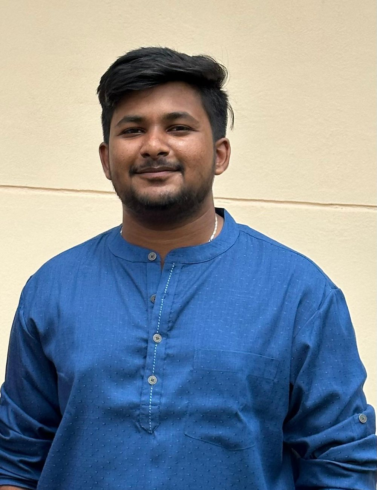
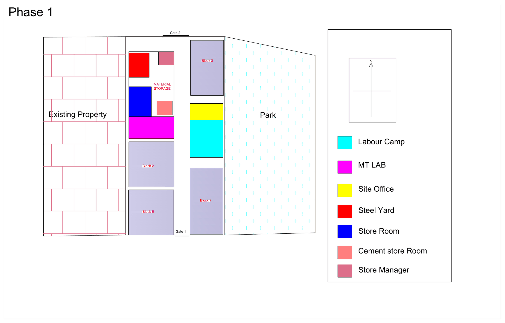
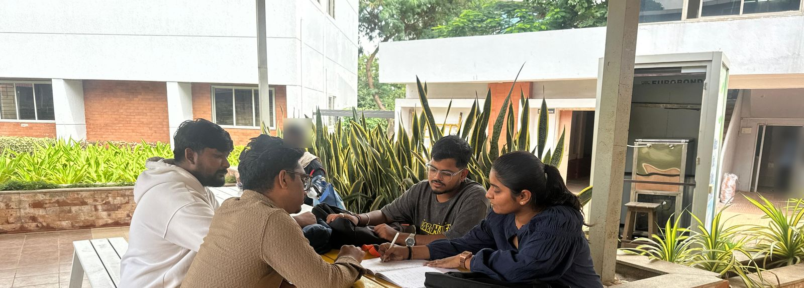

Civil Engineering · Construction Management Workshop
VinayS.Savadi
A portfolio on construction planning, material management, quality assurance, reinforcement and formwork optimisation, and project control.
Contents
Profile
This portfolio is a structured record of construction-management problem solving. It starts with pre-construction planning for a multi-block shopping mall, moves through procurement systems and material quality control, and ends with steel and formwork wastage management. Three later pages extend the learning as clearly identified academic case studies in labour planning, concrete quality and project monitoring.
Contents
The project
- Site area
- 8 acres
- Blocks
- 7
- Underground parking
- 3 levels
- Estimated concrete
- ≈ 12,000 m³
- Gates
- 2


Field and team



Supplied photographs. Location overlays are cropped and a bystander's face is blurred. Their 2026 camera dates don't match the 2024 meetings in the source records, so they aren't presented as those meetings.